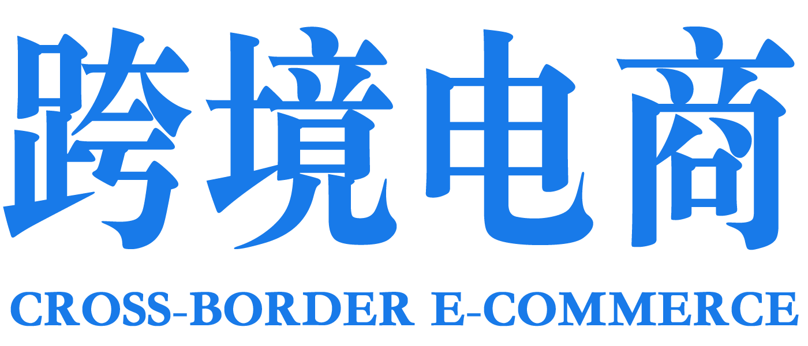

关于我们ABOUT US
边民跨境电商供应链数据来源追溯 始办于2020年7月，边民跨境电商是关注电商发展、民生，提供电商各类生活资讯和情感交流的地方门户论坛。同时欢迎大家加入我们

网站主旨
我们的目标是：打造电商地区最优秀的网络交流平台！
我们所有活动都是自助 需要所有参与者的参与，互相帮助，互相服务……
我们的规矩是：相互尊重，坦诚相待，相互促进，互相交流,
我们的口号是:穿梭时空隧道,重拾昔日纯真!
我们整天忙忙碌碌地为事而奔波,已被层层钢筋水泥围起来的城市中,你我的生活圈子越来越小;
我们渴望与人沟通和交流,我们渴望去认识更多的志同道合朋友;
那就来参加我们的活动吧,在活动中寻找快乐和朋友;
希望大家不要太介意做什么，在哪！
我们要的是一种气氛，一种凝聚力！ 希望大家可以团结起来，
在活动中你可以见到很多活跃在论坛上和群里如雷灌耳的朋友们，
无论你会不会唱歌，能不能喝酒.....都将是一次难得的结识新朋友，叙旧老朋友的机会.
希望大家叫上你们的好友来参加！大家有缘来到这,就能其乐融融,共同营造一个安乐的小家,使之成为一个快乐的大家庭.
通过跨境电商 让用户快乐追求更高质量高效率的生活，分享吃喝玩乐、衣食住行、购物消费、交友婚恋等生活中点点滴滴，认识更多的朋友，拓展自己的交际。跨境电商 汇聚了一帮热爱生活、热情直爽、互助友爱的高端用户，我们的团队会更有信心一直热情的走下去……